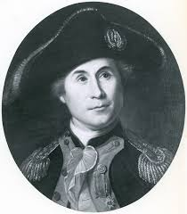

In the American Revolutionary War the Dutch Republic was one of the nations aiding the felgling American 13 colonies to victory. Without European assistance it would have been impossible for the American colonies to win the war. The Dutch were instrumental in this, providing support to the American colonies and in 1781, starting their own war against the British. Without the Dutch aid in this endeavour, the Americans would have lost the support of the first country to recognize them as an independent country, and an instrumental force in locking down the British fleet in Europe, paying for their attempt to help the American with their own lives.
American Admiral John Paul Jones. He got safety in a Dutch port after losing his ensign in battle. The Dutch quickly made him a replacement flag.